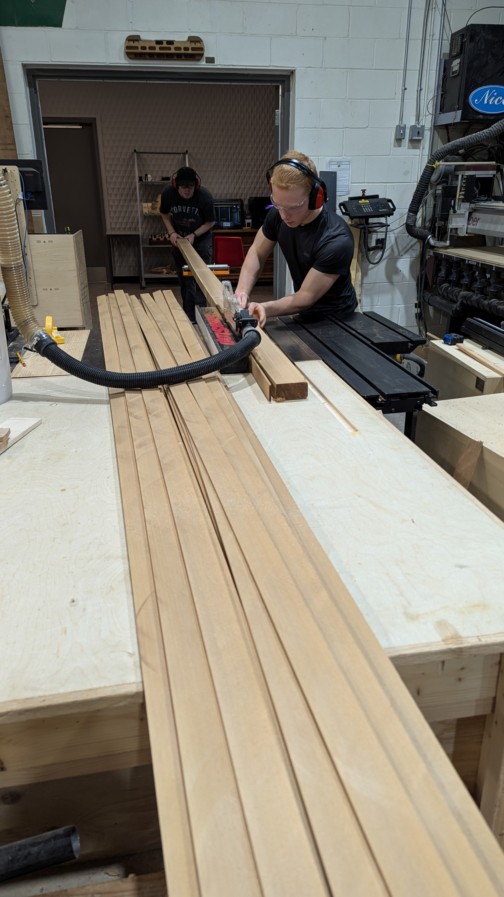
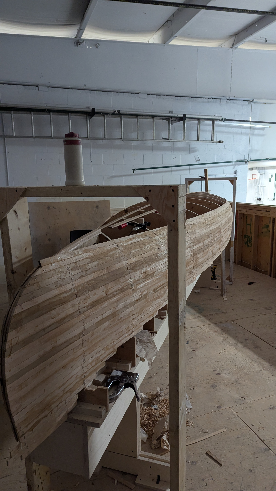
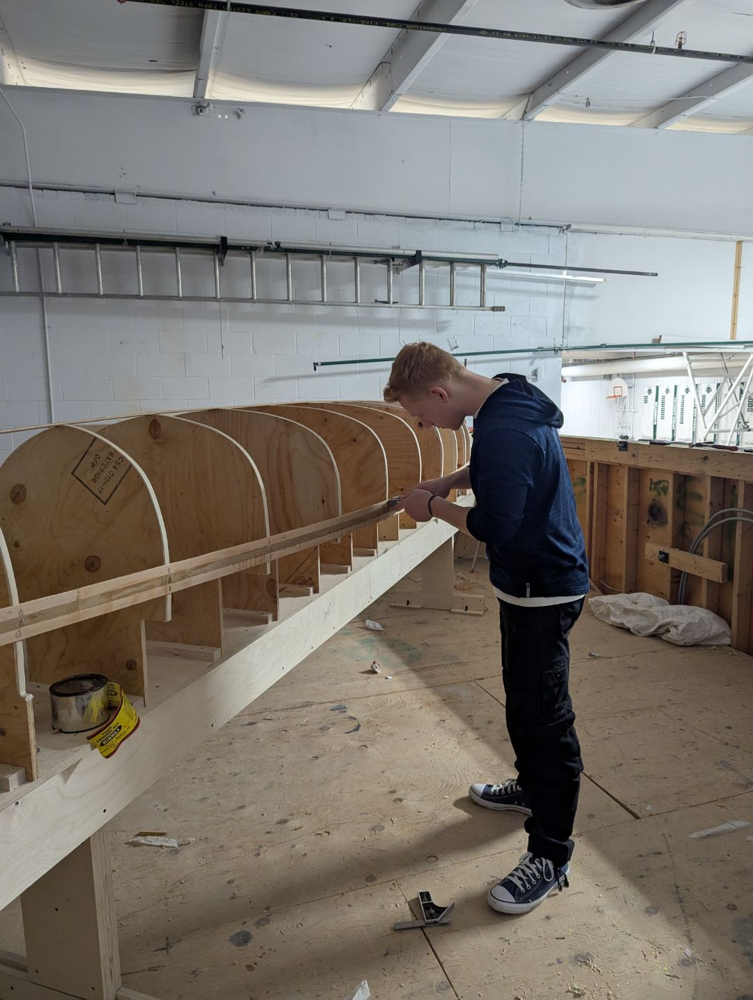
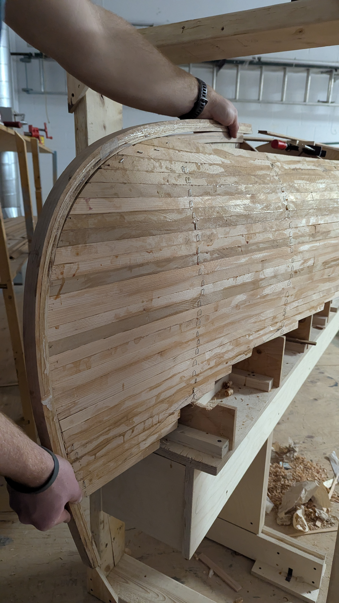

Custom Cedar Strip Canoe






A 17-foot custom vessel blending digital fabrication with traditional woodworking.
Designed to explore the limits of custom fabrication while creating a functional, high-performance outdoor tool.
Utilized CAD for hull hydrodynamics and CNC-machined secondary molds to ensure sub-millimeter precision over 17 feet.
Red Cedar construction with bead-and-cove joinery, reinforced with fiberglass and a marine-grade epoxy finish.
Precision Woodworking & Digital Logic
The engineering challenge of this build lay in maintaining perfect hull symmetry over a massive span. By integrating CNC-machined stations into the assembly process, I was able to translate a digital model into a physical form with far greater accuracy than traditional manual measurements allow.
The construction utilized a meticulous "bead and cove" joinery method, where each individual cedar strip was hand-planed and aligned to create a seamless shell. This process ensured a structurally sound foundation for the subsequent fiberglass lamination, resulting in a vessel that is both a piece of engineering precision and a functional work of art.